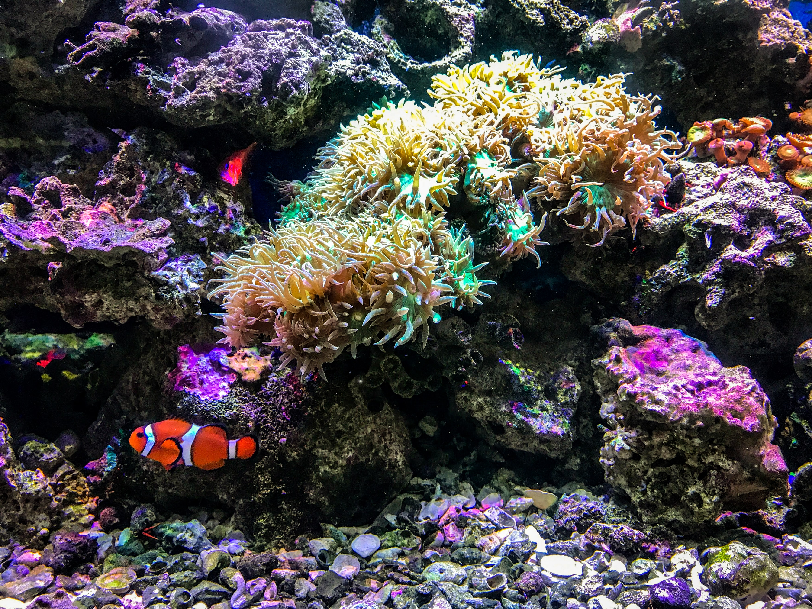
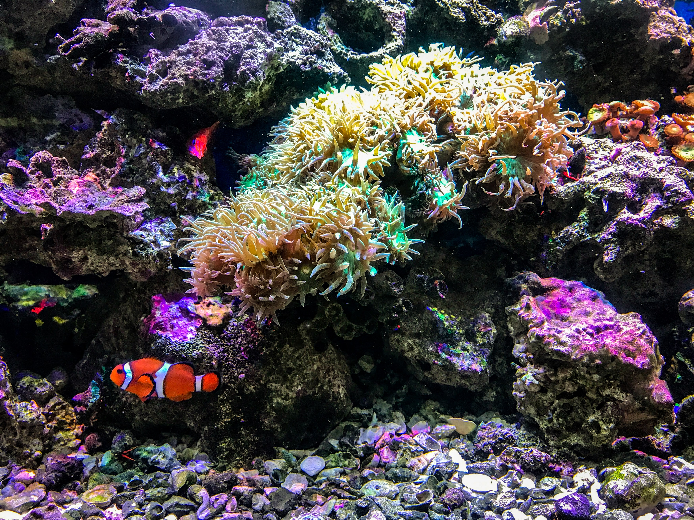

About

One of the most recognisable species of coral reef is Common Clownfish. As each fish's body is covered in mucus which protects it form the stinging cells of anemone which it utilises to devour other fishes. Common Clownfish have few predators because of the shelter provided by their host anemones but they are vulnerable to attrac when they leave the anemone to feed.
 
